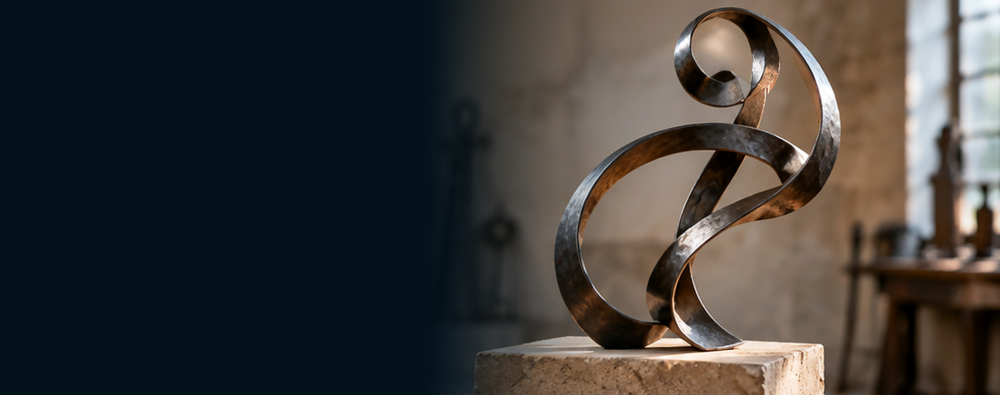
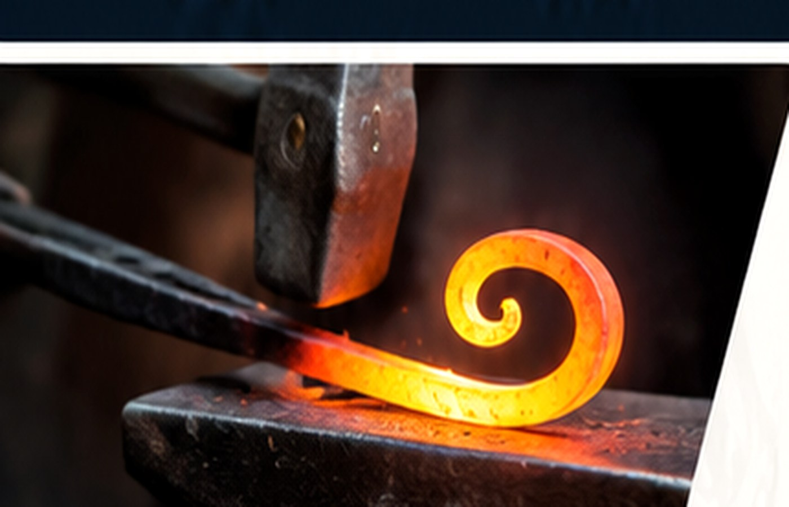

Créations décoratives
Des compositions forgées dont les courbes et les détails sont adaptés à la demande.

L’art de la forge au service de pièces singulières et personnalisées.
Demandez votre devis gratuitLe métal ne se limite pas aux éléments architecturaux. Sous les mains d’un ferronnier d’art, il devient aussi une matière d’expression et de création. Arts Forges et Sculptures réalise des ouvrages décoratifs et des pièces façonnées à la main, dans le respect de l’esprit artisanal qui caractérise la forge. Chaque projet constitue l’occasion de rechercher une forme, une proportion et un mouvement propres à la pièce.
Frédéric Hennebelle met son expérience de plus de 35 ans au service des créations personnalisées. Les courbes, les torsions, les assemblages et le travail des textures donnent au métal un aspect vivant. L’ouvrage peut être destiné à un espace intérieur, à un jardin ou à une composition décorative intégrée à une construction. Les contraintes d’installation sont examinées selon sa destination.

La création artistique commence par un échange : une idée, un dessin, un volume ou une inspiration peuvent servir de point de départ. L’artisan vous accompagne dans le choix d’une solution réalisable et dans la définition des dimensions. Le résultat est une pièce créée pour son emplacement, qui traduit une intention particulière plutôt qu’un modèle reproduit en série.
Des compositions forgées dont les courbes et les détails sont adaptés à la demande.
Le façonnage et l’assemblage mettent en valeur les possibilités expressives du métal.
Chaque demande est étudiée en tenant compte de son usage, de son emplacement et du rendu recherché.
Vous imaginez une création en métal pour un espace de vie ou un lieu particulier ? Décrivez votre idée à l’atelier afin d’en étudier la réalisation.